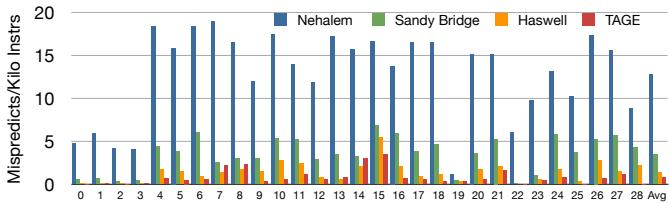
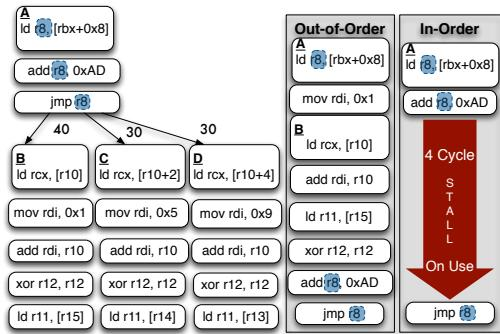
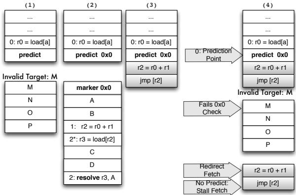
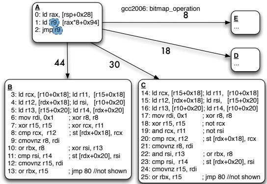
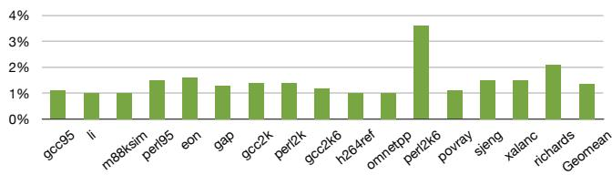

Bungee Jumps: Accelerating Indirect Branches Through HW/SW Co-Design 论文解析¶
0. 论文基本信息¶
作者 (Authors): Daniel S. McFarlin, Craig Zilles
发表期刊/会议 (Journal/Conference): MICRO
发表年份 (Publication Year): 2015
研究机构 (Affiliations): Carnegie Mellon University, University of Illinois at Urbana-Champaign
1. 摘要¶
目的
- 解决 in-order (IO) 处理器在处理 indirect branches 时面临的性能瓶颈。尽管现代 branch predictors 的预测准确率已大幅提升，使 out-of-order (OOO) 处理器能从中受益，但 IO 处理器的代码生成器仍受制于间接分支的 compile-time control dependence，导致其关键路径（计算目标地址的指令链）成为 stall cycles 的主要来源。
- 提出一种方法，让 IO 处理器的代码生成器也能利用高预测准确率，通过打破控制依赖来暴露更多 ILP (Instruction Level Parallelism)，从而模仿 OOO 处理器的高效调度。
方法
- 提出一种 HW/SW co-design 方案，核心是 ISA 增强，将间接分支的 prediction point 和 resolution point 分离为两条独立的指令：
predict-indir-jmp: 作为前端的预测点，用于触发指令预取。resolve: 位于预测的目标路径中，用于验证预测是否正确，并在错误时跳转到 recovery code。
- 配套的 code transformation：
- 将间接分支的计算链（backwards slice）拆分，一部分保留在原地，另一部分与
resolve指令一起 co-mingle（混合调度）到各个可能的分支目标块中。 - 引入 landing pad 机制（通过唯一的 marker instruction），确保即使预测了无效地址，也能安全地回退到正确的计算路径，保证 correctness。
- 使用 fault-suppressed instructions 来处理推测执行期间可能发生的异常，并将其延迟到
resolve点之后处理。
- 将间接分支的计算链（backwards slice）拆分，一部分保留在原地，另一部分与
- 所需的 hardware support：
- Decomposed Branch Buffer (DBB)：一个小型 FIFO 缓冲区，用于在前端关联
predict和resolve指令，确保分支预测器能用resolve的结果正确训练predict指令。 - 对 return address stack (RAS) 进行微小修改，以处理间接调用场景下的返回地址问题。
- Decomposed Branch Buffer (DBB)：一个小型 FIFO 缓冲区，用于在前端关联
结果
- 在 SPEC 2006/2000/95、PHP 和 Python 等间接分支密集型基准测试上评估，取得了显著性能提升：
- Geomean speedup: | Benchmark Suite | 2-wide IO | 4-wide IO | | :-------------- | :-------: | :-------: | | SPEC | 9% | 11% | | PHP | 22% | 24% | | Python | 12% | 14% |
- 该方案的副作用极小：
- 静态代码大小仅增加 1.7% (Geomean)，对 I$ miss rate 几乎无影响。
- 动态指令发射数量平均仅增加不到 1%，保持了 in-order 处理器的高能效。
- 性能提升与 indirect branch predictability 高度正相关，随着预测器（如 TAGE）的进步，该方案的收益会进一步放大。
 808530%40%Figure 14: Speedup on 2-wide and 4-wide Configs.
808530%40%Figure 14: Speedup on 2-wide and 4-wide Configs.
结论
- 通过 分离预测与解析 的 ISA 增强和配套的软硬件协同设计，成功地将现代间接分支预测器的高准确率优势从 OOO 处理器扩展到了 IO 处理器。
- 该方案特别适用于采用 dynamic binary translation (DBT) 技术的处理器（如 Transmeta Efficeon, Nvidia Project Denver），因为它依赖于运行时分析和代码重写。
- 实验结果证明，该方法能有效消除间接分支计算链造成的 stall cycles，在几乎不增加代码大小和能耗的前提下，为 IO 处理器带来 两位数百分比 的显著性能提升。
2. 背景知识与核心贡献¶
研究背景
- 间接跳转 (Indirect branches) 长期以来是微架构和代码生成器的共同挑战，因其目标地址在运行时才能确定，难以预测。
- 乱序执行 (Out-of-Order, OOO) 处理器能直接受益于间接跳转预测准确率的持续提升，因为其动态调度器可以在预测路径上重叠执行指令，掩盖跳转计算链的延迟。
- 顺序执行 (In-Order, IO) 处理器则不然，即使跳转能被准确预测，其编译时的控制依赖仍会强制指令按顺序发射，导致跳转计算链 (indirect branch computation chain) 成为关键路径上的瓶颈，引发流水线停顿。
- 传统针对IO处理器的优化（如断言转换 (assert conversion) 和 谓词执行 (predication)）仅对高度偏置 (highly biased) 或目标数量极少的间接跳转有效。然而，许多间接跳转虽无偏置 (unbiased) 且目标众多，却因现代预测器而具备很高的动态可预测性 (high dynamic predictability)，如图1和图2所示。
 Figure 1: Improvement in Branch Prediction Accu-Indirect Branch Predictability Weighted Average Indirect Branch Bias10 racy (fewer Mispredictions Per Kilo Instructions) on 7529 Python benchmarks across several predictor genera-5 tions; from [2]0 0 1 2 3 4 5
 Figure 2: Indirect Branch Predictability Vs. Weighted Average Indirect Branch Bias for Python benchmarks: With modern predictors, indirect branch predictability is substantially higher than the branch bias
Figure 2: Indirect Branch Predictability Vs. Weighted Average Indirect Branch Bias for Python benchmarks: With modern predictors, indirect branch predictability is substantially higher than the branch bias
研究动机
- 当前ISA中，间接跳转指令同时承担预测点 (prediction point) 和 解析点 (resolution point) 的双重角色，这限制了代码生成器为IO处理器创建类似OOO处理器的重叠调度。
- 如图3(a)所示，OOO处理器能将跳转目标B的指令与跳转计算链重叠执行，而IO处理器则必须等待计算链完成，造成停顿。
- 研究发现，间接跳转后紧随的条件分支通常具有极高的偏置 (>95%)（见图5），但这些优化机会被前面的无偏置间接跳转所阻塞。
- 因此，核心动机是：通过硬件/软件协同设计 (HW/SW Co-Design)，将间接跳转的预测与解析解耦，使代码生成器能利用高预测准确率来打破控制依赖，为IO处理器生成更高效的指令调度。

 Figure 3: The indirect branch computation chain (highlighted) is a source of stall cycles for the In-Order; the Out-of-Order overlaps the chain with instructions from the target B. Our transformation enables the In-Order to mimic the schedule found by the OOO.
Figure 3: The indirect branch computation chain (highlighted) is a source of stall cycles for the In-Order; the Out-of-Order overlaps the chain with instructions from the target B. Our transformation enables the In-Order to mimic the schedule found by the OOO.
 95Figure 5: The conditional branches immediately down90stream of indirect branches exhibit very high bias.
95Figure 5: The conditional branches immediately down90stream of indirect branches exhibit very high bias.
核心贡献
- 提出了一种名为 “Bungee Jumps” 的新方法，通过引入新的ISA指令（
predict-indir-jmp和resolve）将间接跳转的预测点与解析点分离。 - 设计了一套完整的代码变换 (code transformation) 流程：
- 将间接跳转计算链的一部分推送到各个目标块中。
- 在原跳转位置插入
predict-indir-jmp指令以触发前端取指。 - 在每个目标块中插入
resolve指令以验证预测正确性，并处理推测执行 (speculative execution) 中的异常和存储。
- 提出了必要的前端硬件支持——分解分支缓冲区 (Decomposed Branch Buffer, DBB)，用于在预测指令和解析指令之间传递元数据，确保分支预测器能被正确训练。
- 引入了**“着陆垫 (landing pad)”** 机制（通过唯一标识符）来保证在预测到无效目标时，处理器仍能安全地回退到正确的解析路径，确保正确性。
- 在SPEC、PHP和Python等间接跳转密集型基准测试上进行了评估，证明了该方法的有效性：
- 在4-wide IO处理器上，SPEC套件获得11% 的几何平均加速比。
- PHP和Python基准测试分别获得23% 和 14% 的加速比。
- 证明了该变换对静态代码大小的影响极小（约1-3%），且不会损害IO处理器的能效。
3. 核心技术和实现细节¶
0. 技术架构概览¶
整体技术架构
本文提出了一种名为 Bungee Jumps 的 HW/SW Co-Design 方案，旨在解决 in-order (IO) 处理器在处理高可预测性但低偏置（unbiased）的 indirect branches 时面临的性能瓶颈。其核心思想是通过 ISA 增强、编译器代码转换 和 硬件前端支持 三者的协同设计，将间接分支的 prediction point 与 resolution point 分离，从而允许编译器生成能模仿 out-of-order (OOO) 处理器动态调度效果的指令调度。
-
问题根源：
- 在传统 ISA 中，间接跳转指令（如
jmp r9）同时承担了 预测 和 重定向 两个角色。 - 对于 in-order 处理器，这导致计算跳转目标的 critical path（即 indirect branch computation chain）无法与目标代码并行执行，造成 issue stalls。
- 尽管现代 branch predictors（如 TAGE）已大幅提升了间接分支的 predictability（见 Figure 1），但 IO 处理器无法像 OOO 那样利用此优势，因为其调度在编译时就已固化。
- 在传统 ISA 中，间接跳转指令（如
-
软件/编译器层面的解决方案：
- 引入新的 ISA 指令：
predict-indir-jmp和resolve。predict-indir-jmp：作为新的 prediction point，仅由前端处理，用于触发基于预测的取指，并立即从流水线中剥离。resolve：作为 resolution point，被复制并嵌入到每个可能的间接分支目标中，用于在运行时验证预测是否正确。
- 代码转换流程：
- 识别出 predictability > bias 的间接分支（通过 PGO）。
- 将原间接分支的 computation chain（如
ld r9; jmp r9）保留在原地，但将其置于predict-indir-jmp指令之后，作为 recovery code。 - 将 computation chain 的一部分（通常是不依赖其他结果的初始部分）replicate 并 push down 到各个目标块中，与目标代码 co-mingle。
- 在目标块开头插入
resolve指令，并将其中可能产生异常的指令替换为 fault-suppressed instructions（用+后缀表示），其异常由后续的check-fault指令统一处理。 - 为保证正确性，在原分支点前备份 live-in registers，并在 recovery code 中进行恢复。
- 此转换的效果如 和 Figure 3: The indirect branch computation chain (highlighted) is a source of stall cycles for the In-Order; the Out-of-Order overlaps the chain with instructions from the target B. Our transformation enables the In-Order to mimic the schedule found by the OOO. 所示，成功让 IO 处理器模仿了 OOO 的调度。
- 引入新的 ISA 指令：
-
硬件前端支持：
- Decomposed Branch Buffer (DBB)：一个小型 FIFO 缓冲区，用于维护
predict指令和其对应的resolve指令之间的关联。- 当
predict-indir-jmp被取指时，其预测元数据（如 BPT 索引、预测目标地址）被写入 DBB。 - 当
resolve指令被取指时，它会携带一个指向 DBB 中对应条目的索引。 - 如果
resolve检测到 misprediction，它会利用 DBB 中的信息来 resteers 到 recovery code，并正确地 update 分支预测器。
- 当
- Landing Pad 机制：为防止预测器返回一个无效地址（该地址不含
resolve指令），在predict指令和所有有效目标的开头都放置一个唯一的 marker（8-bit immediate）。前端会检查预测目标的 marker 是否匹配，若不匹配则回退到顺序执行 recovery code，确保能 resteers 到正确路径（见  Figure 11: A naive implementation of predict and resolve. Figure 12: (1) Invalid target address predicted and no resolve present; unable to resteer to the correct path (2) marker “landing pad” introduced to ensure a valid indirect branch target is fetched (3)placement indirect branch computation chain in the shadow of the predict allows us to resteer to correct path as shown in (4).）。 - 对 Call/Return 的特殊处理：由于 recovery code 被放置在
predict-call之后，标准的 return 地址会错误地指向 recovery code。解决方案是引入一个新的predict-call指令，它带有一个 immediate offset，用于计算并压入跳过 recovery code 的正确 return 地址（见 Figure 13: (1)The top of the RAS points to the shadow of the indirect call (2) The RAS incorrectly points to our placement of a portion of the indirect branch computation chain in the shadow of the predict (3) New instructions are introduced jump over the indirect branch computation chain in the predict shadow (4) Alternately, a new predict-call instruction contains an immediate: the offset from the address of predict-call to the first non indirect branch computation chain instruction.）。
Figure 13: (1)The top of the RAS points to the shadow of the indirect call (2) The RAS incorrectly points to our placement of a portion of the indirect branch computation chain in the shadow of the predict (3) New instructions are introduced jump over the indirect branch computation chain in the predict shadow (4) Alternately, a new predict-call instruction contains an immediate: the offset from the address of predict-call to the first non indirect branch computation chain instruction.）。
- Decomposed Branch Buffer (DBB)：一个小型 FIFO 缓冲区，用于维护
-
适用场景与开销：
- 该方案特别适合采用 Dynamic Binary Translation (DBT) 的处理器（如 Transmeta Efficeon, Nvidia Project Denver），因为它们可以透明地应用此 ISA 扩展和代码转换。
- 性能收益：在 SPEC、PHP 和 Python 基准测试上，4-wide IO 处理器分别获得了 11%、23% 和 14% 的 Geomean speedup。
- 开销极小：
- 静态代码大小 仅增加 1-3%（见 Table 2 中的 PCI 列）。
- 动态指令发射数 平均仅增加不到 1%（见
 3%Figure 15: Efficiency: Percentage Increase in Issued In2%structions on the 4-wide Experimental (Lower is Better)），保证了能效。
3%Figure 15: Efficiency: Percentage Increase in Issued In2%structions on the 4-wide Experimental (Lower is Better)），保证了能效。
1. Bungee Jump Transformation¶
Bungee Jump Transformation 的核心原理
- 该技术的核心思想是将传统间接跳转指令（如
jmp r9）的两个功能——前端预测（Front-end Prediction）和后端解析（Back-end Resolution）——解耦为两条独立的指令。 - 预测点（Prediction Point）由一条新的 ISA 指令
predict-indir-jmp实现，它仅在处理器前端被处理，用于触发分支预测器并引导取指单元（Fetch Unit）开始从预测的目标地址取指。此指令本身不进入执行流水线。 - 解析点（Resolution Point）由
resolve指令实现，它被放置在每个可能的间接分支目标代码块中。resolve指令负责在运行时验证预测路径是否与实际计算出的跳转目标一致。 - 通过这种分离，编译器或动态二进制翻译器（DBT）可以将原本位于跳转指令之前的、用于计算目标地址的间接分支计算链（Indirect Branch Computation Chain），复制并下沉（Push Down）到各个目标代码块中，并与目标代码交织调度（Co-mingled Scheduling）。
- 这种交织调度打破了原有的编译时控制依赖（Compile-time Control Dependence），使得顺序处理器（In-Order Processor）能够像乱序处理器（Out-of-Order Processor）一样，在等待分支地址最终计算完成的同时，提前执行预测路径上的有用指令，从而隐藏计算链的延迟。
Figure 3: The indirect branch computation chain (highlighted) is a source of stall cycles for the In-Order; the Out-of-Order overlaps the chain with instructions from the target B. Our transformation enables the In-Order to mimic the schedule found by the OOO.
算法流程与关键步骤
- 识别候选分支：使用Profile-Guided Optimization (PGO) 信息，筛选出那些可预测性（Predictability）远高于其分支偏置（Branch Bias）的间接分支。论文采用的启发式策略是选择可预测性超过偏置至少 3% 的分支。
- 插入预测指令：在原始间接跳转指令的位置，插入
predict-indir-jmp指令。该指令携带一个唯一的 8-bit 标记值（Marker Value），用于后续的正确性校验。 - 下沉计算链与插入解析指令：
- 将用于计算跳转目标的指令序列（即计算链）复制到每一个可能的分支目标基本块（Basic Block）的开头。
- 在每个目标块的计算链末尾，插入一个
resolve指令。该指令会检查实际计算出的目标地址是否与当前执行的路径匹配。
- 处理推测执行与异常：
- 在
predict-indir-jmp和resolve之间的所有指令都处于推测执行（Speculative Execution）状态。 - 为了保证推测执行的安全性，所有可能产生异常（Fault）的指令（如内存访问）都需要被替换为非故障版本（Non-faulting Instructions），通常用
+后缀表示（如ld+）。这些指令会抑制异常，并将异常信息累积起来。 - 在每个目标块中插入
check-fault指令，用于在resolve之后检查是否有累积的异常需要处理。 - 所有存储（Store）操作必须被重排到
resolve和check-fault指令之后，以防止在错误路径上污染内存。
- 在
- 生成恢复代码（Recovery Code）：
- 如果
resolve指令检测到预测失败（Misprediction），它会跳转到一段恢复代码。 - 恢复代码负责：1) 恢复因推测执行而被覆盖的活寄存器（Live-in Registers）；2) 如果存在累积的异常，则禁用故障抑制并重新执行相关指令以触发异常；3) 最终通过一个不被预测的间接跳转（
jmp r9）跳转到正确的路径。
- 如果
 (a) Indirect Branch to be overlapped highlighted: branch bias shown on arcs

 Figure 7: Transformation
Figure 7: Transformation
硬件支持与正确性保障
- **Decomposed Branch Buffer **(DBB)：这是一个位于前端的小型FIFO缓冲区，用于维护
predict-indir-jmp和resolve指令之间的关联。- 当
predict-indir-jmp被取指时，其预测信息（如目标地址、预测器索引）被存入 DBB。 - 当对应的
resolve指令被取指时，它会从 DBB 中读取相应的元数据，用于在发生误预测时更新分支预测器。
- 当
- Landing Pad 机制：为了解决预测器可能返回一个无效地址（该地址处没有
resolve指令）的问题，引入了“着陆垫”机制。predict-indir-jmp指令和每个合法目标块的第一个指令（标记指令）都包含相同的 8-bit 标记值。- 取指单元在跳转到预测地址后，会立即检查该地址的首条指令是否包含匹配的标记。
- 如果不匹配或找不到标记，则认为预测无效，转而执行
predict-indir-jmp指令的顺序下一条指令，该位置保留了完整的、用于计算真实目标的原始计算链，从而保证能恢复到正确路径。
Figure 11: A naive implementation of predict and resolve. Figure 12: (1) Invalid target address predicted and no resolve present; unable to resteer to the correct path (2) marker “landing pad” introduced to ensure a valid indirect branch target is fetched (3)placement indirect branch computation chain in the shadow of the predict allows us to resteer to correct path as shown in (4).
输入输出关系及整体作用
- 输入：
- 原始的、包含间接分支的程序代码。
- Profile 数据，包含每个间接分支的动态执行频率、目标地址分布（用于计算 Bias）以及在给定预测器下的可预测性（Predictability）。
- 输出：
- 经过变换的、包含
predict-indir-jmp、resolve、check-fault等新指令的代码。 - 附带的恢复代码（Recovery Code）和可能被修改的调用/返回序列（如
predict-call）。
- 经过变换的、包含
- 在整体系统中的作用：
- 对顺序处理器（In-Order Processor）：该变换是性能提升的关键。它将现代高性能间接分支预测器（Indirect Branch Predictor）的进步直接转化为指令级并行度（ILP）的提升，有效消除了因间接分支计算链导致的流水线停顿。
- 对动态二进制翻译系统（DBT）：该技术特别适合 Transmeta Efficeon 或 Nvidia Project Denver 这类基于 DBT 的处理器。DBT 系统天然具备强大的运行时分析、代码生成和推测执行基础设施（如临时寄存器、非故障指令），能完美支持 Bungee Jump 变换所需的所有软硬件协同特性。
- 性能影响：在 SPEC、PHP 和 Python 等间接分支密集型基准测试中，该技术在 4-wide 顺序核上实现了 11% 的几何平均加速比，同时仅带来约 1.7% 的静态代码体积增长和不到 1% 的动态指令发射数量增加，效率极高。
| Benchmark Suite | Geomean Speedup (4-wide) | Static Code Increase (PCI) | Efficiency (Issued Instr. Increase) |
|---|---|---|---|
| SPEC | 11% | 1.7% | \<1% |
| PHP | 24% | - | - |
| Python | 14% | - | - |
808530%40%Figure 14: Speedup on 2-wide and 4-wide Configs.
2. Decomposed Branch Buffer (DBB)¶
核心设计动机
- 传统间接分支的 预测点 (prediction point) 与 解析/重定向点 (resolution point) 是同一个指令，这使得 In-Order (IO) 处理器无法将分支计算链与目标代码重叠执行。
- 本文提出的 Bungee Jumps 技术将二者分离：引入
predict-indir-jmp指令作为前端的预测点，并在每个可能的分支目标处放置resolve指令作为后端的解析点。 - 这种分离导致了一个关键问题：当
resolve指令检测到预测错误时，它需要将正确的分支目标信息反馈给 分支预测器 (branch predictor)，但预测器是在predict-indir-jmp指令处做出的预测。二者地址不同，预测器无法直接关联。 - Decomposed Branch Buffer (DBB) 的核心作用就是解决这个 元数据关联 (metadata association) 问题，确保预测器能被正确训练。
DBB 的实现原理与算法流程
- DBB 本质上是一个位于处理器 前端 (front-end) 的小型 FIFO (First-In-First-Out) 循环缓冲区。
- 其工作流程分为两个主要阶段：插入 (Insert) 和 关联 (Associate)。
- 插入阶段 (当
predict-indir-jmp被取指时):- 前端在取指缓冲区中检测到
predict-indir-jmp指令（如图8(a)中的阴影指令）。 - 该指令像普通分支一样被送入 分支预测器，预测器返回一个预测的目标地址。
- 前端将此次预测所需的所有 元数据 (metadata) 写入 DBB 的尾部。这些元数据包括：
- 预测器内部表项的 索引 (indices)。
- 预测的 目标地址 (target address)。
- 其他用于更新预测器状态的 预测元数据 (prediction metadata)。
predict-indir-jmp指令本身在完成其引导取指的任务后，即被丢弃，不再进入流水线下游。- DBB 的 尾指针 (tail pointer) 递增。
- 前端在取指缓冲区中检测到
- 关联阶段 (当对应的
resolve指令被取指时):- 前端取到
resolve指令（如图8(b)中的条纹指令）。 - 由于编译器保证
predict和resolve指令不会被重排序或交错，因此当前resolve指令必然对应于 DBB 尾指针所指向的最新predict条目。 - 前端读取 DBB 尾指针处的 索引值，并将此索引 “注入” 到
resolve指令的微操作中，随其一同流经流水线。
- 前端取到
- 处理预测错误 (Misprediction Handling):
- 当
resolve指令在执行单元发现实际计算出的分支目标与预测路径不符时，它会触发 重定向 (resteer)。 - 此时，
resolve指令携带的 DBB 索引 被用来回读 DBB 中存储的原始预测元数据。 - 利用这些元数据和
resolve指令计算出的 正确路径地址，前端可以 正确地更新分支预测器 的状态，从而完成一次有效的训练。 - 同时，机器会重定向到 恢复代码 (recovery code) 以修复因错误预测而破坏的架构状态。
- 当
- 插入阶段 (当
 (b) Insert tail pointer index into corresponding resolution instruction.
(b) Insert tail pointer index into corresponding resolution instruction.
 Figure 8: The Decomposed Branch Buffer and its operations.The area shaded in grey denotes existing HW structures and data/control paths.
Figure 8: The Decomposed Branch Buffer and its operations.The area shaded in grey denotes existing HW structures and data/control paths.
DBB 的参数设置与硬件开销
- 容量: 经验性地设定为 16个条目。论文指出，在 In-Order 处理器中，由于 Head-of-Line Blocking 造成的背压，流水线中同时存在的已转换间接分支数量很少，16个条目已绰绰有余。
- 索引宽度: 16个条目需要 4-bit 的索引，该索引需要与
resolve指令绑定。 - 条目宽度: 每个 DBB 条目包含 72 bits，具体构成为：
- 16 bits 用于存储预测器表层次结构的索引。
- 8 bits 用于存储预测元数据。
- 48 bits 用于存储间接分支的目标地址。
- 端口需求: DBB 本身需要 一个读端口 和 一个写端口 以支持其 FIFO 操作。
输入输出关系及在整体系统中的作用
- 输入:
- 前端:
predict-indir-jmp指令及其预测结果（来自分支预测器）。 - 后端:
resolve指令及其计算出的实际分支目标。
- 前端:
- 输出:
- 对前端: 为
resolve指令提供关联的预测元数据索引，使其能触发正确的预测器更新。 - 对预测器: 在发生预测错误时，提供精确的、与原始
predict指令对应的更新信息，确保 预测器训练的正确性。
- 对前端: 为
- 在整体系统中的作用:
- 桥梁作用: DBB 是连接分离的预测点和解析点的 关键桥梁，是整个 HW/SW Co-Design 方案得以成立的硬件基石。
- 正确性保障: 它确保了即使在预测错误的情况下，处理器不仅能通过恢复代码 维持架构状态的正确性，还能 正确地训练分支预测器，使未来的预测更加准确。
- 异常处理: 论文还讨论了在 中断 (interrupts) 或 异常 (exceptions) 等非正常控制流下，DBB 条目可能会失效。为此，系统设计了两种策略：要么容忍少量错误的预测器更新，要么在异常发生时将 DBB 条目标记为无效并抑制更新，从而保证系统的鲁棒性。
3. Landing Pad with Marker Instructions¶
“Landing Pad with Marker Instructions” 的实现原理与流程
- 核心问题: 在所提出的 Bungee Jumps 转换中，间接分支的 预测点 (predict-indir-jmp) 与 解析点 (resolve) 被分离。预测点位于原分支位置，而解析点被复制并嵌入到每个有效的分支目标中。这带来一个关键的正确性风险：如果分支预测器返回了一个无效的、非预期的目标地址（例如，由于 BTB 冲突或预测器错误），处理器将无法在该无效地址处找到对应的 resolve 指令，从而导致无法进行重定向和状态恢复，破坏程序正确性。
- 解决方案: 引入 “Landing Pad” 机制，通过在预测指令和所有有效目标处插入配对的唯一标识符 (marker) 来验证预测目标的有效性。
算法流程与硬件/软件协同
-
编译时 (Software Transformation):
- 对于每一个被选中进行 Bungee Jumps 转换的间接分支，代码生成器为其分配一个唯一的 8-bit 标识符 (immediate value)。
- 在原间接分支的位置，用
predict-indir-jmp指令替换原始的jmp指令，并将此 8-bit 标识符作为立即数编码进该指令中。 - 在每一个有效的间接分支目标块的开头，插入一条特殊的
marker指令，该指令同样包含这个 8-bit 标识符。 - 同时，在
predict-indir-jmp指令之后（即其顺序下一条指令处），放置完整的间接分支计算链（用于计算真实目标地址）和相关的恢复代码。这部分代码构成了最终的安全网。
-
运行时 (Hardware Execution):
- 当
predict-indir-jmp指令被取指单元获取后，前端会提取其内部的 8-bit 标识符。 - 前端根据预测器的结果，跳转到预测的目标地址并开始取指。
- 取指单元解码预测目标地址处的第一条指令。
- 验证阶段: 硬件逻辑会检查这条指令是否为
marker指令，并比对其内部的 8-bit 标识符是否与predict-indir-jmp指令中的标识符完全匹配。- 匹配成功: 验证通过，表明预测到了一个有效的、已知的目标。执行流继续正常进行，后续的
resolve指令将负责最终确认预测的准确性。 - 匹配失败 (或非 marker 指令): 验证失败，表明预测到了一个无效的、未知的目标。此时，硬件不会继续执行该无效路径，而是立即触发一个回退 (fallback) 机制。
- 匹配成功: 验证通过，表明预测到了一个有效的、已知的目标。执行流继续正常进行，后续的
- 当
-
回退机制:
- 硬件强制将取指地址重定向到
predict-indir-jmp指令的顺序下一条地址。 - 该地址处存放着完整的间接分支计算链，它将重新计算出真实的分支目标地址。
- 计算完成后，通过一个不被预测的间接跳转（如论文中提到的
jmp-no-predict）跳转到正确的路径，确保了程序的正确性。
- 硬件强制将取指地址重定向到
Figure 11: A naive implementation of predict and resolve. Figure 12: (1) Invalid target address predicted and no resolve present; unable to resteer to the correct path (2) marker “landing pad” introduced to ensure a valid indirect branch target is fetched (3)placement indirect branch computation chain in the shadow of the predict allows us to resteer to correct path as shown in (4).
参数设置与设计考量
- 标识符宽度: 采用 8-bit 的标识符。这是一个在唯一性和指令编码开销之间的权衡。8-bit 提供了 256 个唯一的 ID，对于单个预测点的有效目标数量来说通常是充足的，同时只增加了很小的指令大小。
- Marker 指令位置:
marker指令必须是预测目标块中的第一条指令，以确保在执行任何可能产生副作用的代码之前完成验证。 - Fallback 代码位置: 恢复代码被精心放置在
predict-indir-jmp的顺序下一条地址。这种布局利用了处理器处理普通分支失败（fall-through）的固有机制，简化了硬件重定向逻辑。
输入输出关系及在整体架构中的作用
- 输入:
- 软件输入: 被转换的间接分支及其所有有效目标地址。
- 硬件输入:
predict-indir-jmp指令（含 ID）、预测的目标地址、目标地址处的第一条指令。
- 输出:
- 验证结果: 一个布尔信号，指示预测目标是否有效。
- 控制流: 要么流向已验证的有效目标，要么回退到包含完整计算链的恢复代码。
- 在整体中的作用:
- 保障正确性: 这是整个 Bungee Jumps 转换方案能够安全工作的基石。它解决了因预测器返回任意地址而导致的失控风险。
- 解耦预测与解析: 使得预测器可以自由地进行高准确率预测，而无需担心其返回的地址是否“合法”，因为合法性由 Landing Pad 机制来保证。
- 启用激进优化: 正是由于有了这个安全网，编译器才敢于将间接分支的计算链与目标代码共调度 (co-mingle)，从而打破控制依赖，模仿 OoO 处理器的执行效果，最终实现性能提升。
4. Speculative Execution with Fault Suppression¶
Speculative Execution with Fault Suppression 的实现原理与流程
- 核心思想是将间接分支的预测点 (predict-indir-jmp) 与解析点 (resolve) 分离，使得在预测点之后、解析点之前的代码可以被推测执行 (speculatively executed)。
- 由于这段推测执行的代码路径可能因预测错误而无效，因此在此期间发生的任何异常 (faults) 都不能立即处理，否则会破坏程序状态或导致错误的控制流转移。
- 为解决此问题，系统引入了故障抑制 (fault suppression) 机制，其核心组件包括非故障指令 (non-faulting instructions) 和 check-fault 指令。
算法流程与关键步骤
-
代码转换阶段：
- 编译器识别出适合转换的、高可预测性但低偏置的间接分支。
- 将原始的间接跳转指令（如
jmp r9）替换为一个predict-indir-jmp 指令，该指令仅用于前端取指，不进入后端流水线。 - 将间接分支计算链（如地址加载和计算）的一部分复制并下沉 (push down) 到每个可能的分支目标块中。
- 在每个目标块的起始处插入一个 resolve 指令，用于验证预测路径与实际计算出的目标是否一致。
- 关键转换：将所有位于 predict-indir-jmp 和 resolve 指令之间的、可能引发异常的指令（如内存加载）替换为它们的非故障版本。在文中，这些指令通过添加
+后缀来表示（例如，ld+）。 - 在每个目标块中，紧随下沉的计算链之后，插入一个 check-fault 指令。
-
运行时执行阶段：
- 处理器前端遇到 predict-indir-jmp 指令，查询间接分支预测器，并开始从预测的目标地址取指。
- 在预测路径上，所有带有
+后缀的非故障指令在执行时，如果检测到异常（如页错误、段错误），不会立即触发异常处理。相反，异常信息会被捕获、抑制并累积在一个内部状态寄存器中。 - 当执行流到达 resolve 指令时，首先检查预测是否正确。
- 如果预测正确，则继续执行 check-fault 指令。该指令会检查累积的异常状态。如果存在被抑制的异常，则在此刻重新执行对应的故障指令（此时已知路径正确），从而正常触发异常处理流程。
- 如果预测错误，resolve 指令会触发重定向，跳转到恢复代码 (recovery code)。恢复代码负责修复因推测执行而被破坏的架构状态（如恢复被覆盖的寄存器），然后跳转到正确的路径。在此过程中，被抑制的异常会被丢弃，因为它们发生在错误的路径上。
(a) Indirect Branch to be overlapped highlighted: branch bias shown on arcs
Figure 7: Transformation
参数设置与硬件支持
- 非故障指令：这些指令需要硬件支持，能够在检测到异常时不中断流水线，而是设置一个内部标志位。这在动态二进制翻译 (DBT) 系统（如 Transmeta Efficeon）中已有先例。
- 临时寄存器：用于在推测执行前备份那些在多个目标块中会被覆盖的活寄存器 (live-in registers)，以便在预测错误时进行恢复。
- 存储操作约束：为了防止内存损坏，所有存储 (store) 操作必须被放置在 resolve 和 check-fault 指令之后，确保只有在路径被确认为正确后，才会修改内存状态。
输入输出关系及在整体中的作用
- 输入：
- 一段包含高可预测性间接分支的原始代码。
- 间接分支预测器的状态。
- 输出：
- 经过转换的代码，其中包含 predict-indir-jmp, resolve, check-fault 指令以及非故障指令。
- 在运行时，能够安全地推测执行预测路径上的代码，并在路径确认后正确处理潜在的异常。
- 在整体方案中的作用：
- 解除控制依赖：通过故障抑制，使得编译器可以大胆地将预测路径上的代码（包括可能引发异常的内存访问）与间接分支的计算链交织 (co-mingle) 起来，从而模仿 OoO 处理器的动态调度效果。
- 保障正确性：该机制是整个 Bungee Jumps 方案正确性的关键。它确保了即使在推测执行期间发生异常，系统的语义行为也与顺序执行完全一致。
- 提升性能：通过隐藏间接分支计算链的延迟，并允许更激进的指令调度，最终实现了对 in-order 处理器的显著性能加速。
5. Profile-Guided Transformation Selection¶
Profile-Guided Transformation Selection 的实现原理与流程
- 该策略的核心思想是精准识别那些可以从论文提出的 Bungee Jumps 转换中获益的间接分支。并非所有间接分支都适合转换，盲目转换会增加代码体积和错误路径指令，反而损害性能。
- 其决策依据是对比两个关键指标：动态预测准确率 (predictability) 和 静态分支偏置 (bias)。
- 静态分支偏置 (bias) 指在剖析（Profiling）阶段观察到的、最常被执行的那个分支目标所占的执行比例。例如，一个有4个目标的间接分支，如果其中一个目标占了90%的执行次数，其偏置就是90%。
- 动态预测准确率 (predictability) 指在给定硬件分支预测器（如论文中使用的 gshare + VPC）下，该分支被正确预测的概率。
- 核心洞察来源于图2 Figure 2: Indirect Branch Predictability Vs. Weighted Average Indirect Branch Bias for Python benchmarks: With modern predictors, indirect branch predictability is substantially higher than the branch bias：现代分支预测器的能力已经超越了静态偏置。许多间接分支虽然静态偏置不高（例如只有25%-40%），但其动态预测准确率却可以非常高（>90%）。这些分支正是 Bungee Jumps 技术的理想目标。
算法流程与参数设置
- 输入：
- 待优化的程序二进制文件或中间表示（IR）。
- 剖析数据 (Profile Data)：通过在代表性输入集上运行程序收集得到。
- 剖析阶段 (Training Phase)：
- 对于 SPEC 套件，使用 TRAIN 输入集在模拟器（PTLSim）中完整运行，以收集每个间接分支的 bias 和 predictability。
- 对于 PHP 和 Python，则在第一个输入集上进行训练。
- 在此阶段，系统会为程序中的每个间接分支计算并记录其 WAB (Weighted Average Bias) 和 MPKI (Mispredictions Per Kilo Instructions)，从而推导出其 predictability (
predictability = 1 - MPKI / (branch_frequency * 1000))。
- 选择阶段 (Selection Phase)：
- 应用一个简单的启发式规则：仅当一个间接分支的 predictability 超过其 bias 至少 3% 时，才对其进行 Bungee Jumps 转换。
- 这个 3% 的阈值是作者通过实验确定的，它能在性能提升和代码膨胀/效率损失之间取得最佳平衡。
- 输出：
- 一个经过标记的间接分支列表，指明哪些分支需要应用 Bungee Jumps 转换。
- 这个列表作为后续 代码生成 (Code Generation) 阶段的输入，指导 LLVM 编译器在
-O3优化级别下，结合 PGO 信息，对选定的分支执行预测/解析指令的插入、计算链下沉、故障抑制等复杂变换。
在整体架构中的作用
- 承上启下的关键环节：该策略是连接 硬件能力（强大的间接分支预测器）和 软件优化（Bungee Jumps 代码变换）的桥梁。它确保了软件层面的激进优化只施加在硬件能够可靠支持的场景上。
- 最大化性能收益，最小化副作用：
- 通过只转换 高预测性、低偏置 的分支，避免了对那些本就可以通过传统 RCPO (Receiver Class Predication Optimization) 或 assert conversion 有效处理的高偏置分支进行不必要的、代价高昂的转换。
- 同时，也避开了那些预测器也无法准确预测的分支，防止因频繁的 misprediction 而导致大量 recovery code 执行，从而侵蚀性能。
- 量化效果：如表2所示，该策略在 SPEC 套件上平均转换了 20% 的静态间接分支，但覆盖了 PDC (Percentage of Dynamic indirect branches Converted) 高达 98%（如 perl2k）的动态执行。这证明了其选择的有效性和精准性，直接促成了 11% 的几何平均加速比。
4. 实验方法与实验结果¶
实验设置
- 评估平台：使用 LLVM 3.6 作为编译器后端，PTLSim 作为周期精确的全系统模拟器。
- 基准测试集：
- SPEC CPU 套件（2006, 2000, 95），筛选出间接分支占动态指令流 超过 0.3% 的程序。
- PHP 5.6.0 和 Python 3.4.1 的标准运行时及来自 “The Computer Language Benchmark Game” 的代表性基准。
- 处理器模型：探索了两种宽度的 In-Order (IO) 超标量处理器配置（2-wide 和 4-wide），具体参数见下表。
| 组件 | 配置 |
|---|---|
| Fetch/Decode Width | 2 或 4 |
| Issue/Commit Width | 2 或 4 |
| ROB Size | 32 或 64 |
| L1 I/D Cache | 32KB, 4-way |
| L2 Cache | 1MB, 8-way |
| Branch Predictor | gshare (conditional) + VPC (indirect) |
- 训练与选择策略：
- 采用 Profile-Guided Optimization (PGO) 策略。对 SPEC 使用 TRAIN 输入集，对 PHP/Python 使用第一个输入集进行剖析。
- 转换条件：仅转换那些 预测准确率 (predictability) 超过 分支偏置 (bias) 至少 3% 的间接分支。此启发式方法旨在针对“高可预测但低偏置”的间接分支。
- 模拟方法：使用 Intel SDE 选取热点区域进行模拟，每个基准最多模拟 200亿 (20B) 条动态指令。
结果数据
- 性能提升 (Speedup)：
- 在 4-wide 配置上，SPEC 基准获得 11% 的几何平均加速比，PHP 和 Python 分别获得 24% 和 14% 的加速比。
- 在 2-wide 配置上，加速比分别为 9% (SPEC)、22% (PHP) 和 12% (Python)。
- 808530%40%Figure 14: Speedup on 2-wide and 4-wide Configs.
- 关键指标分析 (Table 2)：
- PDS (Percentage of Dynamic Stream)：间接分支在动态指令流中的占比，是性能提升的上限指标。
- WAB (Weighted Average Bias) 与 MPKI (Mispredictions Per Kilo Instructions)：这两个指标共同决定了哪些分支适合被转换。例如，
sjeng虽然 PDS 高，但其较高的 MPKI 限制了其性能增益；而eon由于 WAB 较高，符合转换条件的动态分支比例 (PDC) 较低，导致其加速比不如perl2k。 - PSB/PTC/PDC：分别表示被转换的静态分支数、静态目标数和动态分支数的百分比。在 SPEC 中，平均 20% 的静态间接分支被转换，影响了 31% 的静态目标。
- 分支预测器敏感性：
- 论文将基础预测器（介于 Sandy Bridge 和 Haswell 之间）替换为更先进的 TAGE + ITTAGE。
- 结果显示，每减少 1% 的间接分支错误预测率，该技术带来的额外加速比就增加约 0.3%。
-  Figure 16: Improvement in 4-wide Performance with TAGE + ITTAGE vs. gshare + VPC
消融实验与副作用分析
- 代码体积 (Code Size)：
- 转换导致的静态代码体积增长 (PCI) 的几何平均值仅为 1.7%。
- 由于基准测试的 I$ miss-rate 本身极低（SPEC 平均 \<0.33%，PHP/Python \<0.2%），如此小的代码增长对 I$ 性能 几乎没有影响（miss rate 增加 \<0.3%）。
- 执行效率 (Efficiency)：
- 该技术的核心风险是可能因错误预测而执行大量错误路径的指令，从而浪费功耗。
- 实验测量了 动态发行指令数 的增加比例，结果显示平均增幅低于 1%，证明了该方案在保持 In-Order 处理器能效方面的有效性。
- 3%Figure 15: Efficiency: Percentage Increase in Issued In2%structions on the 4-wide Experimental (Lower is Better)
- 正确性保障机制：
- 虽然论文未将其作为传统意义上的“消融实验”，但其对 Decomposed Branch Buffer (DBB)、landing pad 标记和 check-fault 指令等硬件/软件协同机制的详细描述，实际上论证了这些组件对于保证系统正确性和鲁棒性（尤其是在处理中断和异常时）的必要性。移除其中任何一个都可能导致功能错误或安全漏洞。